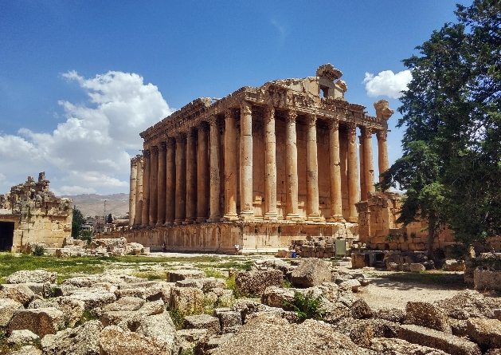
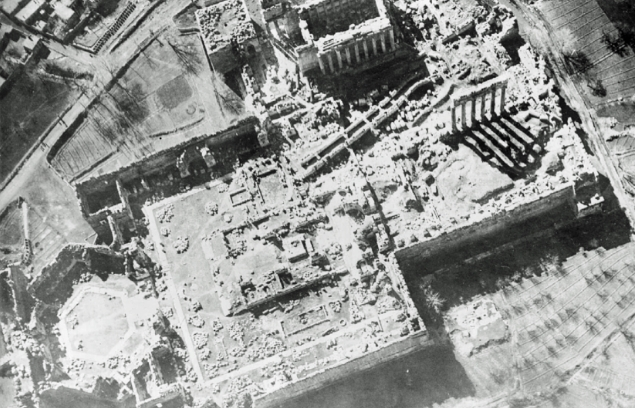

رحلة في أعماق التاريخ والحضارة اللبنانية
نحن فريق شغوف بالتراث اللبناني، نسعى لتقديم محتوى عربي مميز وغني عن أهم المعالم التاريخية في لبنان، وعلى رأسها قلعة بعلبك. هدفنا هو نشر المعرفة السياحية والثقافية بأسلوب بسيط وموثوق ومتاح للجميع، وتشجيع السياحة الداخلية والخارجية نحو هذه المدينة الأسطورية.
على رُفوف التاريخ تتربّع قلعة بعلبك كأحد أعظم الشواهد المعمارية في شرق المتوسّط. يقع المجمع الأثريّ على مشارف سهل البقاع الخصيب، ويرتفع أكثر من ألف متر عن سطح البحر، ما يمنح الزائر إطلالة فريدة تجمع بين القمم الثلجية لسلسلة لبنان الشرقية وحقول العنب المنتشرة في الوادي.


تقع قلعة بعلبك في سهل البقاع الشرقي على ارتفاع 1150 مترًا فوق سطح البحر، وتبعد عن العاصمة بيروت نحو 85 كلم. تشتهر المدينة بمناخها المعتدل صيفًا، وشتائها البارد، وتُعد من أخصب المناطق الزراعية في لبنان. قرب المدينة من الحدود السورية منحها على مرّ العصور أهمية جغرافية واستراتيجية كبرى، مما جعلها ملتقى للتجارة والحضارات.
بعلبك تُعتبر من أقدم المدن التي استوطنها الإنسان في منطقة الشرق الأوسط. يعود تاريخها إلى أكثر من تسعة آلاف سنة قبل الميلاد، حين كانت موقعًا لعبادة الآلهة الكنعانية. لاحقًا، أصبحت مركزًا هامًا في العصر الروماني وشُيّدت فيها معابد ضخمة مثل معبد جوبيتر، ومعبد باخوس، وفينوس، التي لا تزال أطلالها قائمة حتى اليوم.
تحوّلت بعلبك بعد انتشار المسيحية إلى مركز ديني مهم، ثم في العهد الإسلامي أصبحت قلعة حصينة، وقد أضيف إليها مسجد وخزانات مياه وسور دفاعي. في العصر العثماني تراجعت أهميتها، لكن مع بداية القرن العشرين بدأت حملات ترميم واسعة أعادت لها بعضًا من مجدها.
يمتاز الموقع بثلاثة معابد رئيسة بُنيت بين القرنين الأول والثالث للميلاد. أكبرها معبد جوبيتر الذي يُدهش بحجارته الضخمة—بعضها يزن أكثر من ٧٠٠ طن. أمّا معبد باخوس الأصغر حجمًا فيُعتبر اليوم من أفضل المعابد الرومانيّة حفظًا في العالم؛ إذ ما زالت زخارف كورنثيّة دقيقة تزيّن تيجان أعمدته البالغ ارتفاعها ١٩ مترًا. ويكتمل المشهد بمعبد فينوس الدائريّ الذي أُعيد استعماله كنيسة بيزنطيّة في القرن الخامس.
بعلبك ليست فقط أطلالًا، بل هي سجلٌّ نابض يروي قصة تحوّلات حضارية، وثقافية، ودينية، امتدت عبر آلاف السنين.
تُعد مهرجانات بعلبك الدولية من أقدم وأشهر المهرجانات الفنية والثقافية في الشرق الأوسط، وتُقام كل صيف داخل جدران قلعة بعلبك الرومانية التاريخية، مما يمنحها طابعًا ساحرًا لا مثيل له. تأسست عام 1956.
وشهدت عروضًا عالمية لفنانين كبار مثل أم كلثوم، فيروز، شارل أزنافور، وغيرهم. تمتزج في هذه المهرجانات الموسيقى الكلاسيكية، الرقص، الأوبرا، والمسرح، وتُعدّ مناسبة استثنائية تستقطب الزوار من لبنان والعالم أجمع، لتجربة ثقافية وفنية فريدة في أحضان التاريخ.